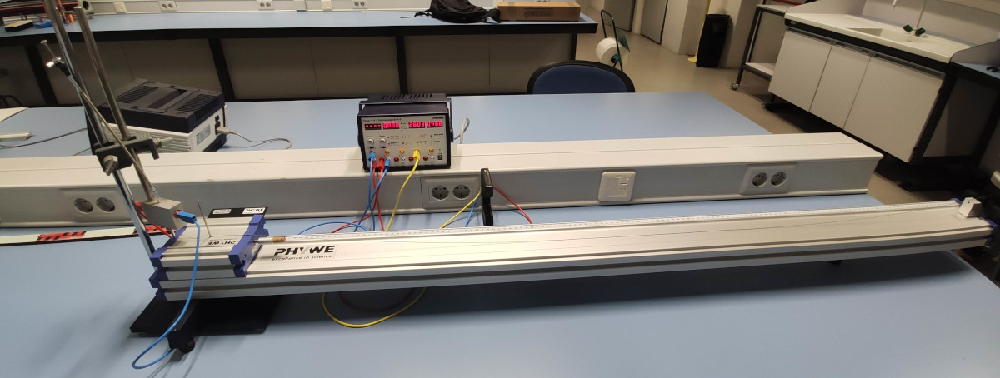

El carril, en el que se elimina prácticamente el rozamiento, permitirá determinar las leyes que rigen la relación entre velocidad y tiempo en movimientos rectilíneos uniformemente acelerados.
2Fundamento teórico
Según la Segunda Ley de Newton, la fuerza total F que actúa sobre un cuerpo rígido de masa m es la derivada temporal de su momento linealp,
F=dtdp=dtd(mv).
Si la masa del cuerpo m permanece constante durante el movimiento, de la ecuación anterior se obtiene
F=mdtdv=ma,
donde a es la aceleración del cuerpo.
En el sistema de la figura, dos objetos, de masas m1 y m2, están unidos por medio de una cuerda inextensible y de masa despreciable que pasa por una polea sin rozamiento. El cuerpo de masa m2 consta de un deslizador (carrito), que se halla sobre un carril, y de una serie de pesas que se pueden colocar a ambos lados del deslizador. El rozamiento entre el deslizador y el carril se puede considerar igualmente nulo. Unido al carril por un hilo, que supondremos inextensible y de masa despreciable, y por una polea sin rozamiento, se encuentra un portapesas que, junto a las pesas que pueden colocarse encima, forma el cuerpo de masa m1. Este cuerpo, que cuelga de la polea, está sometido a la acción de la gravedad, a través de su peso m1g.
Aplicando la ecuación F=mdtdv=ma, a ambos cuerpos, y prescindiendo del carácter vectorial de las magnitudes por ser el movimiento unidimensional, es decir, de un único grado de libertad, se tiene
m1g−T=m1a,
T=m2a,
debido a que la aceleración es la misma para ambos cuerpos, por estar unidos por una cuerda inextensible y de masa despreciable. Para obtener estas ecuaciones, también se ha tenido en cuenta que la tensión T es la misma a ambos lados de la polea al considerarse despreciable la masa de la polea. Sumando ambas expresiones, se deduce la aceleración
a=m1+m2m1g,
que es constante. Integrando en el tiempo esta ecuación, se obtienen la velocidad v(t) de ambos cuerpos y el desplazamiento s(t) de cada cuerpo respecto a su posición inicial. Si partimos de una situación en la que la velocidad inicial es nula, la velocidad en función del tiempo es
v(t)=at=m1+m2m1gt,
3Montaje experimental
El montaje experimental se muestra en la figura. El deslizador dispone de un disparador magnético conectado a un contador digital de cuatro dígitos, de forma que la salida del móvil, con velocidad inicial nula, está sincronizada con la puesta en marcha del reloj (t=0).
ADVERTENCIA IMPORTANTE: El disparador debe ser manejado con gran cuidado porque es bastante delicado.
Se posee también una puerta fotoeléctrica cuya posición en el carril es variable. Su salida está conectada a la parada del contador. Cuando la pantallita del deslizador intercepta el haz de luz de la puerta, el reloj se detiene (instante t ).
La puerta fotoeléctrica es multifuncional, y además de enviar la señal de parada al contador, mide el intervalo de tiempo (Δt ) que la pantallita del deslizador tarda en pasar (para ello se ha de cambiar el ajuste del medidor para que realice esta función). La utilidad de esta última función radica en la posibilidad de medir la velocidad instantánea en el instante de tiempo dados por t′=t+Δt/2, a través de la aproximación:
v(t′)≈ΔtΔs,
donde Δs es la anchura de la pantalla. En esta aproximación, se ha supuesto que Δt es un intervalo temporal lo suficientemente pequeño como para pensar que la velocidad es prácticamente constante en este intervalo.

Montaje experimental.
4Resultados
Anotar la anchura de la pantalla del deslizador junto con el error correspondiente.
Δs=εΔs=
Colocar 20g en el gancho que cuelga de la polea y cuya masa es de 1g (es recomendable que el alumno compruebo estos datos), y no colocar pesas sobre el deslizador, cuya masa es m2= 375 g. Modificando la posición de la barrera fotoeléctrica, variar el espacio s recorrido por la pantalla deslizador (es decir, la distancia entre el centro de la pantalla y la puerta fotoeléctrica) desde 35cm hasta 70cm en intervalos de 5cm. En cada caso, medir tres veces el tiempo t que tarda el deslizador en alcanzar la barrera fotoeléctrica, y tres veces el intervalo de tiempo Δt que tarda la pantalla en atravesar el haz de luz. Calcular los respectivos promedios t y Δt y, con ellos, calcular la velocidad instantánea aproximada, v=Δs/Δt en el instante t′=t+Δt/2. Es importante asegurarse de que el hilo permanece dentro del canal de la polea a lo largo de todo el movimiento. Si el hilo se sale de la acanaladura, deberá repetirse el lanzamiento.
s
±ϵs
t1
t2
t3
±ϵti
t
±ϵt
s
±ϵs
Δt1
Δt2
Δt3
±ϵΔt3i
Δt
±ϵΔt
s
±ϵs
t′=t+Δt/2
±ϵt′
v=Δs/Δt
±ϵv
Representar gráficamente la velocidad instantánea v frente al tiempo t′ y traza su recta de regresión lineal.
Determinar la pendiente A, la ordenada en el origen B y el coeficiente de correlación r2 de la recta de mínimos cuadrados v=A⋅t′+B.
A(±εA)=
B(±εB)=
r=
A partir de A, y comparando con la ecuación v(t)=at=m1+m2m1gt, calcular otro valor de la aceleración del movimiento a y otro valor experimental de la gravedad g.